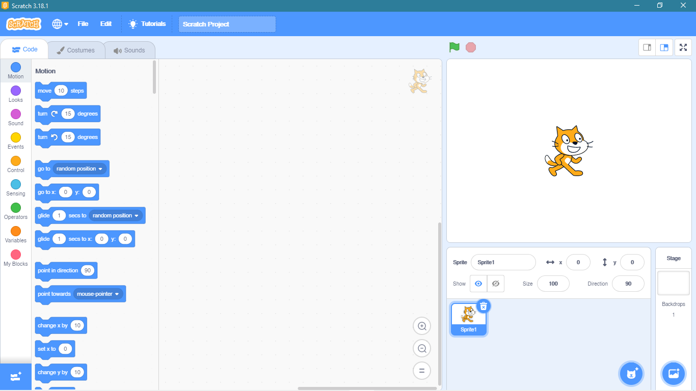
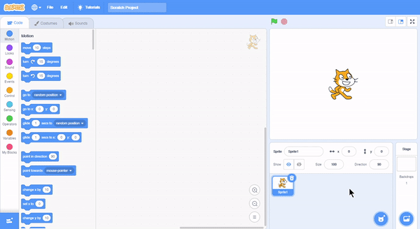
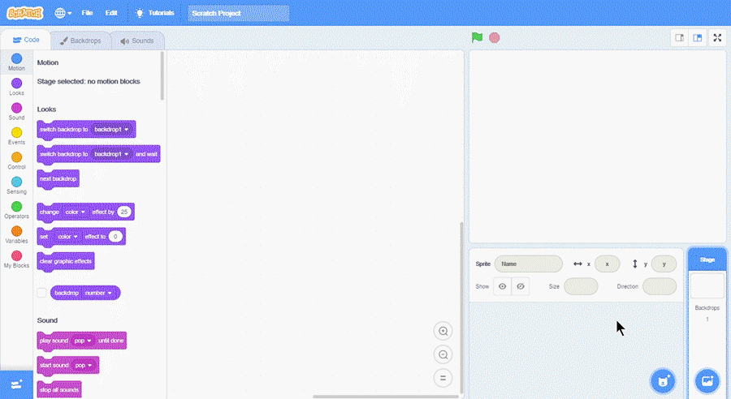

Sprite awal saat Scratch pertama kali dibuka adalah karakter kucing.  {{% notice note %}} Sprite awal tersebut merupakan maskot dari aplikasi Scratch. {{% /notice %}}
Pada Sprite Pane, terdapat ikon tong sampah untuk menghapus sprite. 
Jika kita ingin menambahkan sprite baru, klik ikon kucing pada Sprite Pane. 
Selain menambahkan sprite, kita juga dapat menambahkan background. Background dapat ditambahkan pada sprite pane sesuai.